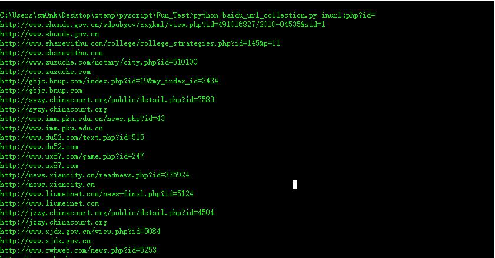

<!DOCTYPE html>
<html>
<head><meta name="generator" content="Hexo 3.8.0">
  <meta charset="utf-8">
  
  <title>百度爬虫 | sm0nk&#39;s blog</title>

  <!-- keywords -->
  

  <meta name="viewport" content="width=device-width, initial-scale=1, maximum-scale=1">
  <meta name="description" content="1. 目的使用爬虫脚本 爬去 百度搜索关键字后获得r链接地址以及域名信息可结合GHDB语法e.g.  inurl:php?id=">
<meta name="keywords" content="python">
<meta property="og:type" content="article">
<meta property="og:title" content="百度爬虫">
<meta property="og:url" content="http://yoursite.com/2017/09/08/百度爬虫/index.html">
<meta property="og:site_name" content="sm0nk&#39;s blog">
<meta property="og:description" content="1. 目的使用爬虫脚本 爬去 百度搜索关键字后获得r链接地址以及域名信息可结合GHDB语法e.g.  inurl:php?id=">
<meta property="og:locale" content="default">
<meta property="og:image" content="http://yoursite.com/2017/09/08/百度爬虫/1.jpg">
<meta property="og:updated_time" content="2017-09-08T09:21:25.750Z">
<meta name="twitter:card" content="summary">
<meta name="twitter:title" content="百度爬虫">
<meta name="twitter:description" content="1. 目的使用爬虫脚本 爬去 百度搜索关键字后获得r链接地址以及域名信息可结合GHDB语法e.g.  inurl:php?id=">
<meta name="twitter:image" content="http://yoursite.com/2017/09/08/百度爬虫/1.jpg">
  
    <link rel="alternative" href="/atom.xml" title="sm0nk&#39;s blog" type="application/atom+xml">
  
  
    <link rel="icon" href="http://p6.sinaimg.cn/3607464725/180/71341468803657">
  
  <link rel="stylesheet" href="/css/style.css">
  
  

  <script src="//cdn.bootcss.com/require.js/2.3.2/require.min.js"></script>
  <script src="//cdn.bootcss.com/jquery/3.1.1/jquery.min.js"></script>

  
</head></html>
<body>
  <div id="container">
    <div id="particles-js"></div>
    <div class="left-col">
    <div class="overlay"></div>
<div class="intrude-less">
	<header id="header" class="inner">
		<a href="/" class="profilepic">
			
			
			
		</a>

		<hgroup>
		  <h1 class="header-author"><a href="/">sm0nk</a></h1>
		</hgroup>

		

		
			<div class="switch-btn">
				<div class="icon">
					<div class="icon-ctn">
						<div class="icon-wrap icon-house" data-idx="0">
							<div class="birdhouse"></div>
							<div class="birdhouse_holes"></div>
						</div>
						<div class="icon-wrap icon-ribbon hide" data-idx="1">
							<div class="ribbon"></div>
						</div>
						
						
					</div>
					
				</div>
				<div class="tips-box hide">
					<div class="tips-arrow"></div>
					<ul class="tips-inner">
						<li>菜单</li>
						<li>标签</li>
						
						
					</ul>
				</div>
			</div>
		

		<div class="switch-area">
			<div class="switch-wrap">
				<section class="switch-part switch-part1">
					<nav class="header-menu">
						<ul>
						
							<li><a href="/categories/攻防渗透/">攻防渗透</a></li>
				        
							<li><a href="/categories/编程之道/">编程之道</a></li>
				        
							<li><a href="/categories/归纳总结/">归纳总结</a></li>
				        
							<li><a href="/categories/认知独省/">认知独省</a></li>
				        
						</ul>
					</nav>
					<nav class="header-nav">
						<div class="social">
							
								<a class="mail" target="_blank" href="mailto:sm0nk@qq.com" title="mail">mail</a>
					        
								<a class="weibo" target="_blank" href="http://weibo.com/shellr00t" title="weibo">weibo</a>
					        
						</div>
					</nav>
				</section>
				
				
				<section class="switch-part switch-part2">
					<div class="widget tagcloud" id="js-tagcloud">
						<a href="/tags/CTF/" style="font-size: 10px;">CTF</a> <a href="/tags/SQL注入/" style="font-size: 10px;">SQL注入</a> <a href="/tags/blog/" style="font-size: 10px;">blog</a> <a href="/tags/pentest/" style="font-size: 10px;">pentest</a> <a href="/tags/python/" style="font-size: 20px;">python</a> <a href="/tags/seleinum/" style="font-size: 10px;">seleinum</a> <a href="/tags/struts2/" style="font-size: 10px;">struts2</a> <a href="/tags/业务逻辑/" style="font-size: 10px;">业务逻辑</a> <a href="/tags/代理转发/" style="font-size: 10px;">代理转发</a> <a href="/tags/创新/" style="font-size: 10px;">创新</a> <a href="/tags/工控安全/" style="font-size: 10px;">工控安全</a> <a href="/tags/应急/" style="font-size: 20px;">应急</a> <a href="/tags/接口安全/" style="font-size: 10px;">接口安全</a> <a href="/tags/渗透/" style="font-size: 10px;">渗透</a> <a href="/tags/爆破/" style="font-size: 10px;">爆破</a> <a href="/tags/语言安全/" style="font-size: 10px;">语言安全</a> <a href="/tags/远程下载/" style="font-size: 10px;">远程下载</a>
					</div>
				</section>
				
				
				

				
			</div>
		</div>
	</header>				
</div>
    </div>
    <div class="mid-col">
      <nav id="mobile-nav">
  	<div class="overlay">
  		<div class="slider-trigger"></div>
  		<h1 class="header-author js-mobile-header hide">sm0nk</h1>
  	</div>
	<div class="intrude-less">
		<header id="header" class="inner">
			<div class="profilepic">
				
			</div>
			<hgroup>
			  <h1 class="header-author">sm0nk</h1>
			</hgroup>
			
			<nav class="header-menu">
				<ul>
				
					<li><a href="/categories/攻防渗透/">攻防渗透</a></li>
		        
					<li><a href="/categories/编程之道/">编程之道</a></li>
		        
					<li><a href="/categories/归纳总结/">归纳总结</a></li>
		        
					<li><a href="/categories/认知独省/">认知独省</a></li>
		        
		        <div class="clearfix"></div>
				</ul>
			</nav>
			<nav class="header-nav">
				<div class="social">
					
						<a class="mail" target="_blank" href="mailto:sm0nk@qq.com" title="mail">mail</a>
			        
						<a class="weibo" target="_blank" href="http://weibo.com/shellr00t" title="weibo">weibo</a>
			        
				</div>
			</nav>
		</header>				
	</div>
</nav>
      <div class="body-wrap"><article id="post-百度爬虫" class="article article-type-post" itemscope itemprop="blogPost">
  
    <div class="article-meta">
      <a href="/2017/09/08/百度爬虫/" class="article-date">
  	<time datetime="2017-09-08T08:00:46.000Z" itemprop="datePublished">2017-09-08</time>
</a>
    </div>
  
  <div class="article-inner">
    
      <input type="hidden" class="isFancy">
    
    
      <header class="article-header">
        
  
    <h1 class="article-title" itemprop="name">
      百度爬虫
      
    </h1>
  

      </header>
      
      <div class="article-info article-info-post">
        
	<div class="article-tag tagcloud">
		<ul class="article-tag-list"><li class="article-tag-list-item"><a class="article-tag-list-link" href="/tags/python/">python</a></li></ul>
	</div>

        
	<div class="article-category tagcloud">
	<a class="article-category-link" href="/categories/编程之道/">编程之道</a>
	</div>


        
        <div class="clearfix"></div>
      </div>
      
    
    <div class="article-entry" itemprop="articleBody">
      
        <h1><span id="1-目的">1. 目的</span></h1><p>使用爬虫脚本 爬去 百度搜索关键字后获得r链接地址以及域名信息<br>可结合GHDB语法<br>e.g.  inurl:php?id=<br><a id="more"></a></p>
<h1><span id="2-知识结构">2. 知识结构</span></h1><p>2.1 使用 threading &amp; queue 模块，多线程处理，自定义线程数<br>2.2 使用BeautifulSoup &amp; re模块，处理href 匹配<br>2.3 使用requests 模块，处理web请求&amp;获得请求后的真实地址（r.url）<br>2.4 百度最大搜索页面76页，pn max 760<br>2.5 将结果存入文本，域名已去重</p>
<h1><span id="3-爬虫脚本">3. 爬虫脚本</span></h1><figure class="highlight python"><table><tr><td class="gutter"><pre><span class="line">1</span><br><span class="line">2</span><br><span class="line">3</span><br><span class="line">4</span><br><span class="line">5</span><br><span class="line">6</span><br><span class="line">7</span><br><span class="line">8</span><br><span class="line">9</span><br><span class="line">10</span><br><span class="line">11</span><br><span class="line">12</span><br><span class="line">13</span><br><span class="line">14</span><br><span class="line">15</span><br><span class="line">16</span><br><span class="line">17</span><br><span class="line">18</span><br><span class="line">19</span><br><span class="line">20</span><br><span class="line">21</span><br><span class="line">22</span><br><span class="line">23</span><br><span class="line">24</span><br><span class="line">25</span><br><span class="line">26</span><br><span class="line">27</span><br><span class="line">28</span><br><span class="line">29</span><br><span class="line">30</span><br><span class="line">31</span><br><span class="line">32</span><br><span class="line">33</span><br><span class="line">34</span><br><span class="line">35</span><br><span class="line">36</span><br><span class="line">37</span><br><span class="line">38</span><br><span class="line">39</span><br><span class="line">40</span><br><span class="line">41</span><br><span class="line">42</span><br><span class="line">43</span><br><span class="line">44</span><br><span class="line">45</span><br><span class="line">46</span><br><span class="line">47</span><br><span class="line">48</span><br><span class="line">49</span><br><span class="line">50</span><br><span class="line">51</span><br><span class="line">52</span><br><span class="line">53</span><br><span class="line">54</span><br><span class="line">55</span><br><span class="line">56</span><br><span class="line">57</span><br><span class="line">58</span><br><span class="line">59</span><br><span class="line">60</span><br><span class="line">61</span><br><span class="line">62</span><br><span class="line">63</span><br><span class="line">64</span><br><span class="line">65</span><br><span class="line">66</span><br><span class="line">67</span><br><span class="line">68</span><br><span class="line">69</span><br><span class="line">70</span><br><span class="line">71</span><br><span class="line">72</span><br></pre></td><td class="code"><pre><span class="line"></span><br><span class="line"><span class="comment">#coding=utf-8</span></span><br><span class="line"></span><br><span class="line"><span class="keyword">import</span> requests</span><br><span class="line"><span class="keyword">import</span> re</span><br><span class="line"><span class="keyword">import</span> Queue</span><br><span class="line"><span class="keyword">import</span> threading</span><br><span class="line"><span class="keyword">from</span> bs4 <span class="keyword">import</span> BeautifulSoup <span class="keyword">as</span> bs</span><br><span class="line"><span class="keyword">import</span> os,sys,time</span><br><span class="line"></span><br><span class="line">headers = &#123;<span class="string">'User-Agent'</span>:<span class="string">'Mozilla/5.0 (Windows NT 10.0; WOW64; rv:50.0) Gecko/20100101 Firefox/50.0'</span>&#125;</span><br><span class="line"></span><br><span class="line"></span><br><span class="line"><span class="class"><span class="keyword">class</span> <span class="title">BaiduSpider</span><span class="params">(threading.Thread)</span>:</span></span><br><span class="line">    <span class="function"><span class="keyword">def</span> <span class="title">__init__</span><span class="params">(self,queue)</span>:</span></span><br><span class="line">        threading.Thread.__init__(self)</span><br><span class="line">        self._queue = queue</span><br><span class="line">    <span class="function"><span class="keyword">def</span> <span class="title">run</span><span class="params">(self)</span>:</span></span><br><span class="line">        <span class="keyword">while</span> <span class="keyword">not</span> self._queue.empty():</span><br><span class="line">            url = self._queue.get_nowait()</span><br><span class="line">            <span class="keyword">try</span>:</span><br><span class="line">                <span class="comment">#print url</span></span><br><span class="line">                self.spider(url)</span><br><span class="line">            <span class="keyword">except</span> Exception,e:</span><br><span class="line">                <span class="keyword">print</span> e</span><br><span class="line">                <span class="keyword">pass</span></span><br><span class="line"></span><br><span class="line">    <span class="function"><span class="keyword">def</span> <span class="title">spider</span><span class="params">(self,url)</span>:</span></span><br><span class="line">    <span class="comment">#if not add self , error:takes exactly 1 argument (2 given)    </span></span><br><span class="line">        r = requests.get(url=url,headers=headers)</span><br><span class="line">        soup = bs(r.content,<span class="string">'lxml'</span>)</span><br><span class="line">        urls = soup.find_all(name=<span class="string">'a'</span>,attrs=&#123;<span class="string">'data-click'</span>:re.compile((<span class="string">'.'</span>)),<span class="string">'class'</span>:<span class="keyword">None</span>&#125;)</span><br><span class="line">        <span class="keyword">for</span> url <span class="keyword">in</span> urls:</span><br><span class="line">            <span class="comment">#print url['href']</span></span><br><span class="line">            new_r = requests.get(url=url[<span class="string">'href'</span>],headers=headers,timeout=<span class="number">3</span>)</span><br><span class="line">            <span class="keyword">if</span> new_r.status_code == <span class="number">200</span> :</span><br><span class="line">                url_para = new_r.url</span><br><span class="line">                url_index_tmp = url_para.split(<span class="string">'/'</span>)</span><br><span class="line">                url_index = url_index_tmp[<span class="number">0</span>]+<span class="string">'//'</span>+url_index_tmp[<span class="number">2</span>]</span><br><span class="line">                <span class="keyword">print</span> url_para+<span class="string">'\n'</span>+url_index</span><br><span class="line">                <span class="keyword">with</span> open(<span class="string">'url_para.txt'</span>,<span class="string">'a+'</span>) <span class="keyword">as</span> f1:</span><br><span class="line">                    f1.write(url_para+<span class="string">'\n'</span>)</span><br><span class="line">                <span class="keyword">with</span> open(<span class="string">'url_index.txt'</span>,<span class="string">'a+'</span>) <span class="keyword">as</span> f2:</span><br><span class="line">                    <span class="keyword">with</span> open(<span class="string">'url_index.txt'</span>, <span class="string">'r'</span>) <span class="keyword">as</span> f3:</span><br><span class="line">                        <span class="keyword">if</span> url_index <span class="keyword">not</span> <span class="keyword">in</span> f3.read():</span><br><span class="line">                            f2.write(url_index+<span class="string">'\n'</span>)</span><br><span class="line">            <span class="keyword">else</span>:</span><br><span class="line">                <span class="keyword">print</span> <span class="string">'no access'</span>,url[<span class="string">'href'</span>]</span><br><span class="line"></span><br><span class="line"><span class="function"><span class="keyword">def</span> <span class="title">main</span><span class="params">(keyword)</span>:</span></span><br><span class="line">    queue = Queue.Queue()</span><br><span class="line">    de_keyword = keyword.decode(sys.stdin.encoding).encode(<span class="string">'utf-8'</span>)</span><br><span class="line">    <span class="keyword">print</span> keyword</span><br><span class="line">    <span class="comment"># baidu max pages 76 , so pn=750 max</span></span><br><span class="line">    <span class="keyword">for</span> i <span class="keyword">in</span> range(<span class="number">0</span>,<span class="number">760</span>,<span class="number">10</span>):</span><br><span class="line">        <span class="comment">#queue.put('https://www.baidu.com/s?ie=utf-8&amp;wd=%s&amp;pn=%d'%(keyword,i))</span></span><br><span class="line">        queue.put(<span class="string">'https://www.baidu.com/s?ie=utf-8&amp;wd=%s&amp;pn=%d'</span>%(de_keyword,i))</span><br><span class="line">    threads = []</span><br><span class="line">    thread_count = <span class="number">4</span></span><br><span class="line">    <span class="keyword">for</span> i <span class="keyword">in</span> range(thread_count):</span><br><span class="line">        threads.append(BaiduSpider(queue))</span><br><span class="line">    <span class="keyword">for</span> t <span class="keyword">in</span> threads:</span><br><span class="line">        t.start()</span><br><span class="line">    <span class="keyword">for</span> t <span class="keyword">in</span> threads:</span><br><span class="line">        t.join()</span><br><span class="line"></span><br><span class="line"><span class="keyword">if</span> __name__ == <span class="string">'__main__'</span>:</span><br><span class="line">    <span class="keyword">if</span> len(sys.argv) != <span class="number">2</span>:</span><br><span class="line">        <span class="keyword">print</span> <span class="string">'Enter:%s keyword'</span>%sys.argv[<span class="number">0</span>]</span><br><span class="line">        sys.exit(<span class="number">-1</span>)</span><br><span class="line">    <span class="keyword">else</span>:</span><br><span class="line">        main(sys.argv[<span class="number">1</span>])</span><br></pre></td></tr></table></figure>
<p>效果图<br></p>
<h1><span id="4-待优化点">4. 待优化点</span></h1><p>4.1 多个搜索引擎的处理<br>4.2 多参数的处理<br>4.2 payload 结合</p>
<h1><span id="5-参考信息">5. 参考信息</span></h1><p>5.1. ADO ichunqiu Python安全工具开发应用<br>5.2. <a href="https://github.com/sharpdeep/CrawlerBaidu/blob/master/CrawlerBaidu.py" target="_blank" rel="noopener">https://github.com/sharpdeep/CrawlerBaidu/blob/master/CrawlerBaidu.py</a></p>

      
    </div>
    
  </div>
  
    
<nav id="article-nav">
  
    <a href="/2017/09/08/渗透测试/" id="article-nav-newer" class="article-nav-link-wrap">
      <strong class="article-nav-caption">&lt;</strong>
      <div class="article-nav-title">
        
          渗透测试
        
      </div>
    </a>
  
  
    <a href="/2017/09/08/安全应急/" id="article-nav-older" class="article-nav-link-wrap">
      <div class="article-nav-title">安全应急</div>
      <strong class="article-nav-caption">&gt;</strong>
    </a>
  
</nav>

  
</article>


</div>
      <footer id="footer">
  <div class="outer">
    <div id="footer-info">
      <div class="footer-left">
        &copy; 2023 sm0nk
      </div>
        <div class="footer-right">
          <a href="http://hexo.io/" target="_blank">Hexo</a>  Theme <a href="https://github.com/smackgg/hexo-theme-smackdown" target="_blank">Smackdown</a>
        </div>
    </div>
  </div>
</footer>
    </div>
    
  <link rel="stylesheet" href="/fancybox/jquery.fancybox.css">


<script>
	var yiliaConfig = {
		fancybox: true,
		mathjax: true,
		animate: true,
		isHome: false,
		isPost: true,
		isArchive: false,
		isTag: false,
		isCategory: false,
		open_in_new: true
	}
</script>
<script src="/js/main.js"></script>


<script type="text/x-mathjax-config">
MathJax.Hub.Config({
    tex2jax: {
        inlineMath: [ ['$','$'], ["\\(","\\)"]  ],
        processEscapes: true,
        skipTags: ['script', 'noscript', 'style', 'textarea', 'pre', 'code']
    }
});

MathJax.Hub.Queue(function() {
    var all = MathJax.Hub.getAllJax(), i;
    for(i=0; i < all.length; i += 1) {
        all[i].SourceElement().parentNode.className += ' has-jax';                 
    }       
});
</script>

<script src="//cdn.bootcss.com/mathjax/2.7.0/MathJax.js"></script>


  </div>
</body>
</html>